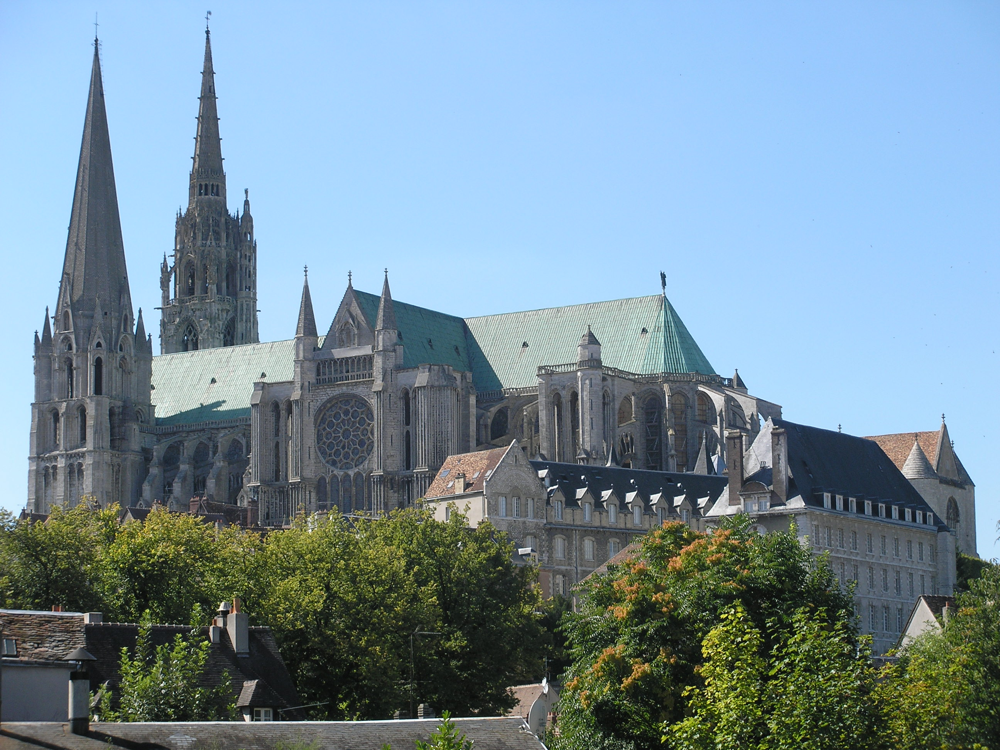
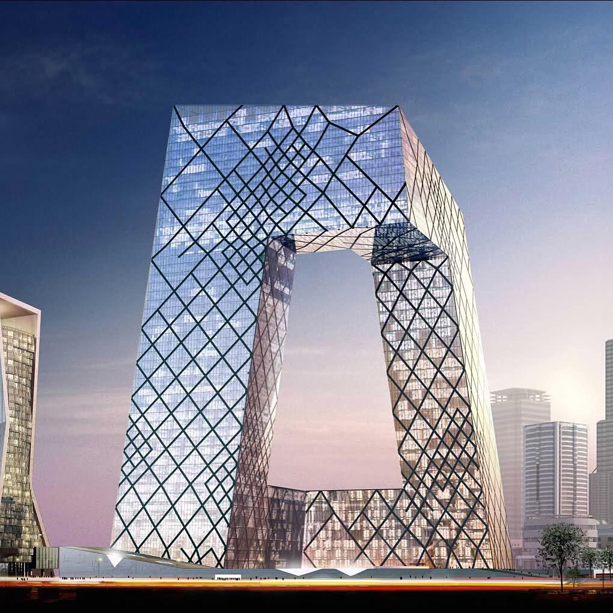
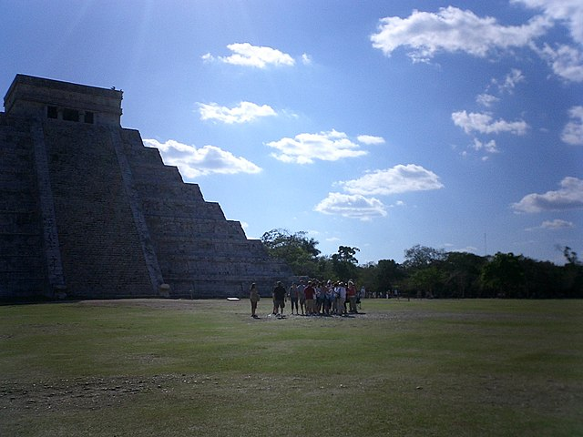
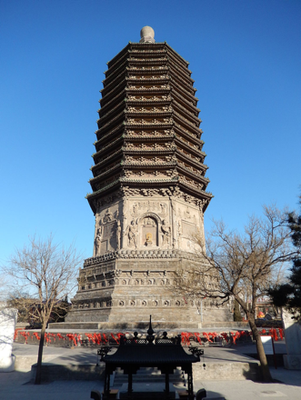
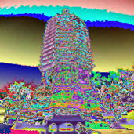
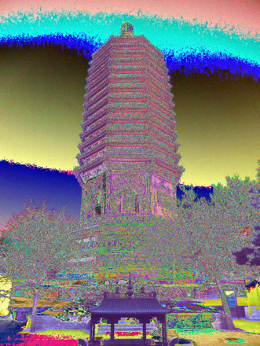
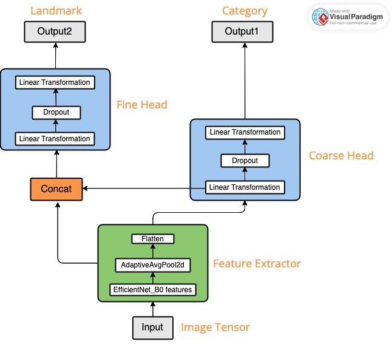

Multi-Level Landmark Image Classification
01 Project Overview
This project tackles a two-level landmark recognition challenge: given an image of a world landmark, predict both its architectural style category (coarse classification) and the specific landmark name (fine-grained classification) — simultaneously, within a single end-to-end neural network.
The core challenge is severe data scarcity. The dataset contains only 6 style categories, each comprising 5 landmarks with 14 images per landmark — roughly 420 images in total. Standard CNNs trained from scratch collapse into overfitting immediately at this scale. The solution: a modified EfficientNet-B0 backbone with a custom dual-head architecture, combined with an aggressive Albumentations augmentation pipeline and StratifiedKFold cross-validation.
02 Dataset — Training Data Samples
The dataset (Landmarks-v1_0) spans 6 architectural style categories — Gothic, Modern, Mughal, NeoClassical, Pagodas, and Pyramids — with 5 specific landmarks per category and 14 labeled images per landmark. Representative samples from each category are shown below.



03 Data Preprocessing & Augmentation
To counteract overfitting on the tiny dataset, a comprehensive image augmentation pipeline was engineered using the Albumentations library. Two classes of transforms were applied:
- Pixel-level transforms — Blur (max kernel size 3, probability 0.2), RandomBrightnessContrast — alter pixel intensities without changing spatial structure
- Spatial-level transforms — HorizontalFlip, Rotate — change both pixel values and spatial layout (keypoints and masks)
- Normalization & Resizing — Mean and standard deviation computed from the full Landmarks-v1_1 dataset pixel statistics
Data splitting used StratifiedKFold to ensure each fold maintains the same class distribution, preventing any single fold from being unrepresentative of the full label space.
Augmentation Pipeline — Visual Examples
The same pagoda image through each stage of the augmentation pipeline:



04 Model Architecture — Dual-Head EfficientNet-B0
The model is built on the PyTorch Lightning framework using two core classes: EffNet_B0 (the backbone + dual-head architecture) and LitModule (the training loop and evaluation logic).
Architecture Design
The EfficientNet-B0 backbone serves as a shared feature extractor, applying AdaptiveAvgPool2d and Flatten to produce a feature vector from any input image. This vector then branches into two independent classification heads:
- Coarse Head (Category) — Linear → Dropout → Linear. Outputs one of 6 architectural style probabilities via Softmax.
- Fine Head (Landmark Name) — receives a concatenation of the EfficientNet features and the intermediate output of the first linear layer in the Coarse Head. This design passes coarse-level semantic context into the fine classification branch, allowing the landmark-name predictor to benefit from style awareness without gradient interference.
The Dropout layer in each head acts as a regularizer. The deliberate choice to concatenate the pre-Dropout output (rather than the post-Dropout) ensures no information loss when bridging the two branches.

Training Configuration
Loss: CrossEntropyLoss computed separately for coarse and fine tasks. Optimizer: AdamW with a StepLR learning rate scheduler to decay the learning rate during training. Evaluation metric: macro F1 score for both tasks.
05 Results
The model was evaluated on both training and validation splits, plus the held-out Vocareum grading platform. The category (style) task consistently outperforms the landmark name task — expected given the coarser label space.
| Task | Split | F1 Score | Loss |
|---|---|---|---|
| Category (Coarse) | Train | 0.9547 | 0.1701 |
| Category (Coarse) | Validation | 0.6965 | 0.1237 |
| Landmark Name (Fine) | Train | 0.8500 | 0.5259 |
| Landmark Name (Fine) | Validation | 0.5500 | 0.6751 |
| Overall (Combined) | Train | 0.9033 | 0.3480 |
| Overall (Combined) | Validation | 0.6233 | 0.3994 |
| Category — Vocareum | Held-out test | 0.9546 | — |
| Landmark — Vocareum | Held-out test | 0.6207 | — |
06 Conclusion & Future Work
The dual-head EfficientNet-B0 architecture demonstrated that it is possible to achieve high-quality simultaneous coarse and fine-grained classification under extreme data scarcity conditions. The Albumentations augmentation pipeline and StratifiedKFold splitting were essential components in controlling overfitting without requiring additional data collection.
The generalization gap between training and validation (particularly for landmark name prediction) is primarily attributable to dataset size. The landmark name task is inherently harder — 30 fine-grained classes versus 6 coarse categories — and 14 images per class is far below the sample count typically needed for reliable fine-grained feature learning.
Future directions identified in the study include: expanding the dataset through additional data collection or web scraping, exploring more advanced augmentation strategies (e.g., CutMix, MixUp), and investigating alternative architectures or multi-task fine-tuning strategies such as progressive resizing and domain-specific pre-training.
07 Tech Stack
| Category | Tool / Library | Purpose |
|---|---|---|
| Deep Learning | PyTorch · PyTorch Lightning | Model definition, training loop, evaluation |
| Backbone | EfficientNet-B0 (torchvision) | Pre-trained feature extraction via transfer learning |
| Augmentation | Albumentations | Pixel-level and spatial-level image transforms |
| Validation Strategy | StratifiedKFold (scikit-learn) | Class-balanced cross-validation splits |
| Optimizer | AdamW + StepLR | Weight-decayed Adam with LR scheduling |
| Loss | CrossEntropyLoss | Separate loss computation per classification head |
| Evaluation | Macro F1 Score | Task performance metric for both heads |
Ref Bibliography
Buslaev, A.; Iglovikov, V.I. et al. Albumentations: Fast and Flexible Image Augmentations. Information 2020, 11, 125.
Li, Y.; Crandall, D.J.; Huttenlocher, D.P. Landmark classification in large-scale image collections. IEEE 12th International Conference on Computer Vision, Kyoto, 2009.
Berrar, D. Cross-Validation. 2019, pp. 542–545.
Tan, M.; Le, Q.V. EfficientNet: Rethinking Model Scaling for Convolutional Neural Networks. arXiv:1905.11946, 2019.